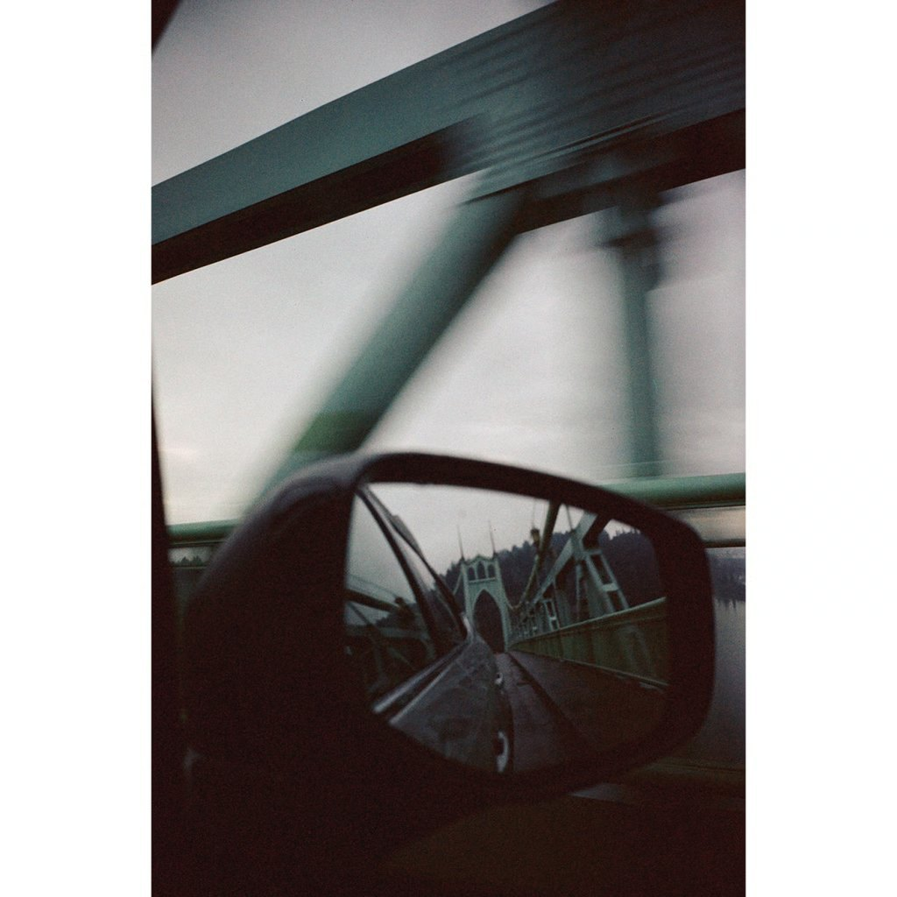
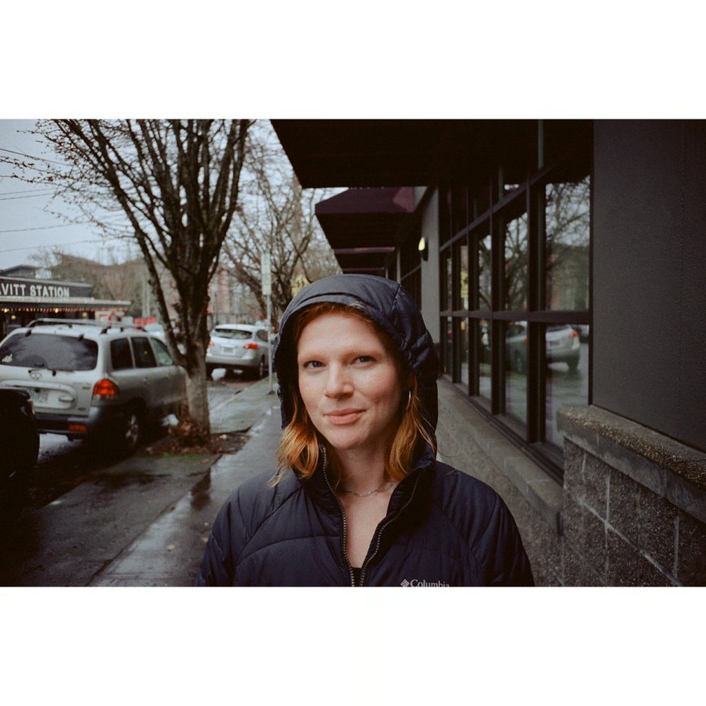
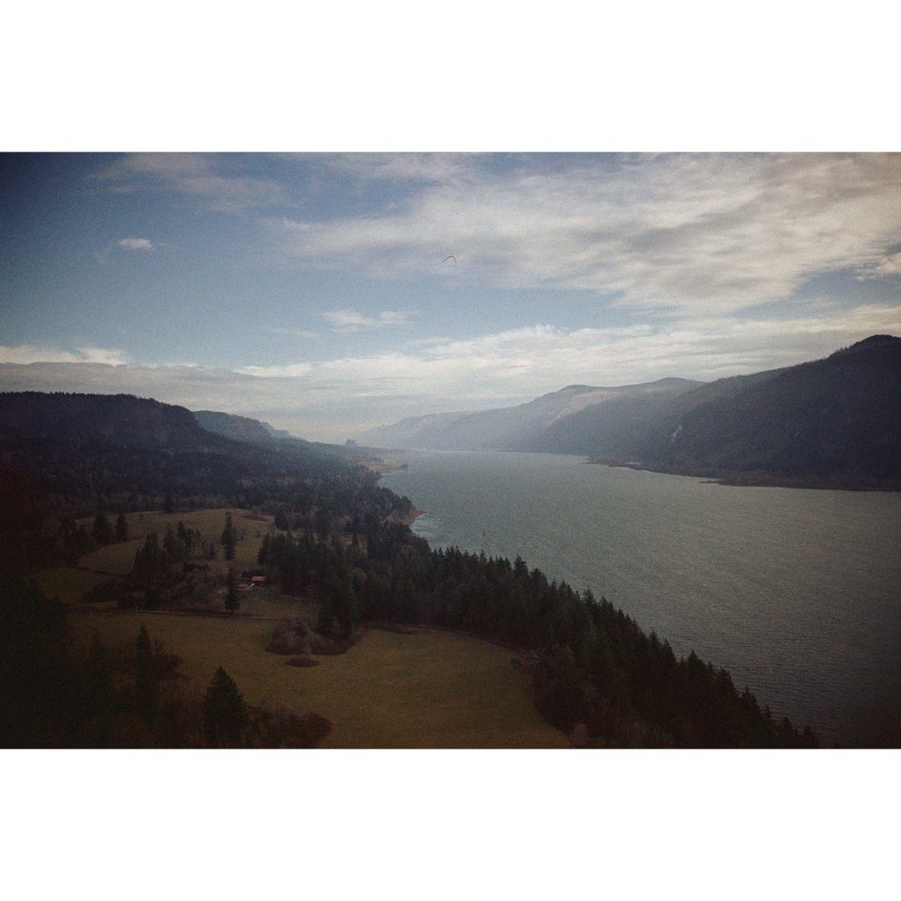
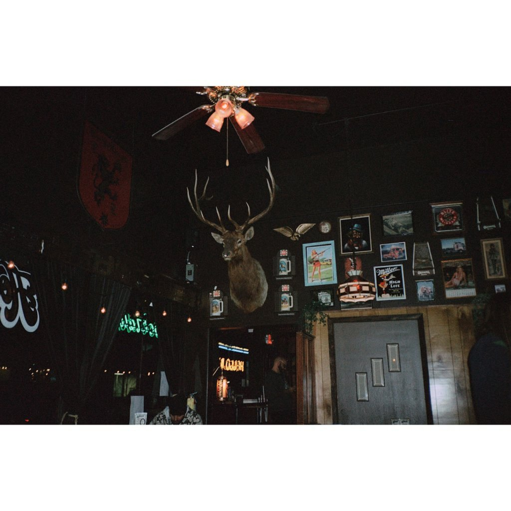
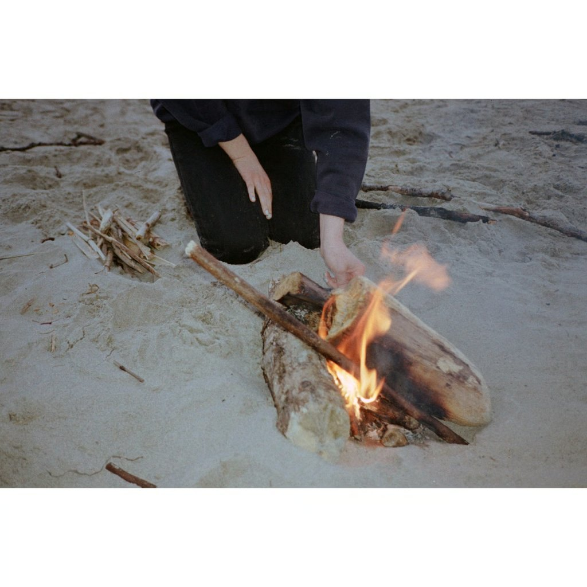

새 컬러 필름이 또 한 통 풀렸다. 표면적으로는 그렇다. 박스를 열면 안에는 이미 시장에 돌고 있는 에멀젼이 들어 있다. 인디 컬러 필름의 작은 사정이 이번에도 그대로 드러난 셈이다.
Optik Oldschool 이 낸 새 필름
Optik Oldschool 은 미국의 작은 필름 브랜드다. 자체 공장을 가진 회사가 아니라, 다른 곳에서 만든 필름을 자기 식대로 손봐 박스에 담아 파는 쪽에 가깝다. 이번에 그들이 내놓은 신제품이 OptiColour 200. ISO 200 / 데이라이트 / C-41 / 36 EXP 의 35mm 컬러 네거티브 필름이다. 첫 출하는 120 (중형) 으로 2025년 6월에 €9.90 정도에 시작했고, 35mm 36 exp 박스가 2026년에 본격적으로 풀리는 흐름이다.

안에 든 건 ORWO Wolfen NC200
박스 디자인은 새것이지만, 에멀젼 정체는 이미 시장에 나와 있는 것이다. InovisCoat GmbH 가 만든 컬러 네거티브. 그게 곧 ORWO Wolfen NC200 이다.
여기서 잠깐 이름 관계부터 정리해 둬야 한다. ORWO 는 "ORiginal WOlfen" 의 줄임말로, 원래 동독 비터펠트볼펜의 한 공장에서 출발한 브랜드다. 1994년 원래 ORWO 회사는 파산했고, 브랜드와 일부 자산이 여러 손을 거쳐 결국 독일 모하임암라인의 InovisCoat GmbH 로 흘러갔다. InovisCoat 은 컬러 에멀젼 코팅 노하우를 가진 작은 코팅 메이커이고, 2020년 영국계 사업가 Jake Seal 이 InovisCoat 과 동독계 시네 필름 회사 FilmoTec 을 모두 사들이며 현재의 ORWO Wolfen 라인을 본격적으로 가동했다.
즉, 지금 시장에 풀리는 ORWO Wolfen 의 컬러 필름들은 옛 동독 ORWO 공장의 직계가 아니라 InovisCoat 의 신규 코팅이다. 같은 코팅 라인에서 나오는 같은 에멀젼이 누구의 브랜드 박스에 들어가느냐에 따라 이름만 바뀐다.
같은 에멀젼, 네 가지 이름
현재 같은 InovisCoat NC200 에멀젼이 적어도 네 가지 이름으로 팔리고 있다.
- ORWO Wolfen NC200, 본가의 이름. 자체 브랜드. 베이스 색 그대로.
- KONO! Color 200, 오스트리아 인디 라벨 KONO 의 OEM 박스.
- Lomochrome Classicolor 200, Lomography 가 같은 에멀젼을 자기 라인업에 넣어 판매.
- Optik OptiColour 200, 이번에 추가된 미국 라벨. 단 한 가지 차이로 손봐서 내놓는 형태.
이 네 통의 필름을 같은 조건에서 노출하고 같은 약품으로 현상하면 결국 같은 결과가 나온다. 박스 색이 다르고 가격이 다를 뿐이다.

Optik 이 손본 단 한 가지, 베이스 색
그렇다면 Optik 이 손본 부분은 어디인가. Optik 이 밝힌 차이는 하나다. 베이스 컬러.
원본 InovisCoat NC200 의 베이스는 살짝 녹색이 도는 (greenish base) 형태로 들어 있다. 스캐너로 뽑을 때 이 녹색이 컬러 캐스트로 잡혀 후처리에서 일을 더 만든다는 평이 줄곧 있었다. Optik 은 이 베이스를 보통의 컬러 네거티브에 쓰이는 오렌지 마스크 베이스로 바꿔 코팅을 의뢰했다. 일반 C-41 워크플로우의 자동 화이트밸런스나 인버전 프로파일에 더 잘 맞는 한 통이 된 셈이다.
화학적으로는 같은 에멀젼이다. 다만 스캔과 후처리에서 손이 가는 정도가 다르다. 본가 NC200 의 녹색 베이스를 좋아해서 쓰는 사람도 있고 (직접 만져 나오는 톤이 마음에 든다는 쪽), 그게 거추장스럽다고 보는 사람도 있다. Optik 은 후자를 노렸다.

스펙과 가격, 출시 일정
- 감도, ISO 200 (24 DIN), 데이라이트 밸런스
- 현상, 표준 C-41
- 포맷, 35mm 36 EXP, 120 (중형)
- 120 출시, 2025년 6월부터 약 €9.90 (한 통 기준, 약 11달러)
- 35mm 출시, 2026년 본격 유통
- 국내 유통 계획, 확인된 바 없음. 2026년 6월 현재 한국 정식 채널 미정
가격대는 인디 컬러 네거티브의 평균에 가깝다. 코닥 Gold 200 과 Portra 400 의 정가가 올라가면서 인디 컬러의 가격이 다시 매력적으로 보이는 시기에 맞물렸다.
ORWO Wolfen 컬러 라인의 진화
OptiColour 의 정체를 정리한 김에, ORWO Wolfen 의 현재 컬러 라인도 같이 짚어두면 좋다. 같은 InovisCoat 코팅 라인의 점진적 개선 흐름이 있다.
- NC500 (ISO 400), 2022년 라인 첫 컬러. 거친 입자감과 낮은 채도로 호불호가 갈렸다. 시네필름 계보의 잔흔이 강했다.
- NC400 (ISO 400), NC500 의 입자감을 다듬고 채도를 살짝 끌어올린 개정. 발색이 더 정상적인 컬러 네거티브에 가까워졌다.
- NC200 (ISO 200), 가장 최신. 그린 채널의 표현이 한 단계 안정되고 다이내믹 레인지가 더 넓어졌다는 게 InovisCoat 의 설명이다. 인물·풍경 일반용으로 가장 무난한 한 통이 됐다.
흥미로운 건 NC400 의 후속이 새 ISO 400 이 아니라 오히려 한 스톱 느린 NC200 이라는 점이다. 인디 컬러 필름이 주로 야외 데이라이트와 풍경, 인물 쪽에 쓰이는 흐름을 반영한 결정으로 보인다. OptiColour 가 굳이 200 으로 시작한 이유도 같은 맥락이다.

인디 컬러 필름의 OEM 구조
한 걸음 떨어져 보면 컬러 네거티브 필름의 현실이 다시 보인다. 새 컬러 필름을 처음부터 설계해 만드는 곳은 전 세계에 다섯 손가락 안에 든다. 코닥, 후지필름, ORWO Wolfen / InovisCoat, 그리고 시네 필름을 가정용으로 잘라 파는 몇몇 군소 회사. 거기서 끝이다.
이 가운데 InovisCoat 은 자체 브랜드와 OEM 을 동시에 굴리는 작은 코팅 회사다. KONO! · Lomography · Optik 같은 브랜드 회사들은 자체 코팅 라인이 없으니, 결국 같은 InovisCoat 라인에 줄을 선다. 거기서 베이스 색이나 박스 디자인, 가격대 같은 마지막 마무리만 자기 식대로 손본다. 그래서 같은 에멀젼이 네 이름으로 풀리는 풍경이 자연스럽게 생긴다.
이 구조 자체는 새로운 게 아니다. 1990 년대 후지의 일부 필름이 다른 회사의 라벨로 풀렸고, AGFA 컬러도 비슷한 길을 거쳤다. 인디 컬러 필름이 늘어나는 지금의 풍경은, 사실 시장이 커진 게 아니라 같은 작은 코팅 라인에 더 많은 라벨이 줄을 서고 있다는 의미에 가깝다.
그래서 OptiColour 200 을 사기 전에 한 번쯤 물어볼 만한 질문은 이런 것이다. 같은 NC200 인데 녹색 베이스와 오렌지 베이스 중 어느 쪽이 내 작업 흐름에 더 맞나. 둘 다 NC200 이라는 사실은 변하지 않는다. 라벨로 풀린 가격 차가 그만한 차이인지는 한 통씩 찍어본 뒤에야 답이 잡힌다.

정리
- Optik OptiColour 200 은 미국 인디 브랜드 Optik Oldschool 의 새 컬러 네거티브. ISO 200, 데이라이트, C-41.
- 안에 든 에멀젼은 InovisCoat 의 ORWO Wolfen NC200 과 같다. KONO! Color 200, Lomochrome Classicolor 200 과도 같은 라인.
- Optik 이 손본 부분은 베이스 컬러 한 가지. 원본의 녹색 베이스를 오렌지 마스크로 바꿔 스캐너 친화적으로 만들었다.
- 출시 일정: 120 은 2025년 6월부터 (€9.90 전후), 35mm 36 EXP 는 2026년 본격 유통.
- ORWO Wolfen 컬러 라인의 흐름은 NC500 → NC400 → NC200. 후속이 더 빠른 게 아니라 더 느린 ISO 로 정착했다.
- 인디 컬러 필름의 다수가 같은 InovisCoat 코팅 라인에 묶여 있다. 라벨 차이가 곧 화학 차이는 아니다.
- 국내 정식 유통 계획은 2026년 6월 기준 미확인.
참고 출처: PetaPixel — Film Friday: Optik OptiColour Is a New Color Film That Goes By Many Names (2026.06.05), Optik Oldschool 공식, ORWO Wolfen / InovisCoat, KONO! / Lomography 공식 라인업. 본문에 사용된 사진은 모두 Optik Oldschool 의 공개 자료이며, © Optik Oldschool 표기 권장. 국내 수입·유통 정보는 별도 확인 필요.